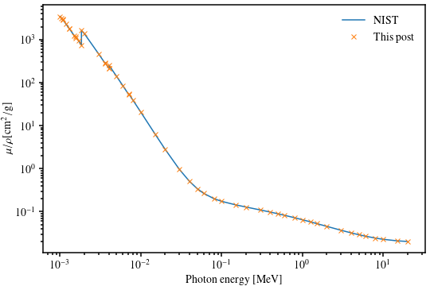

Scrapy-ing the NIST X-ray Attenuation Databases
I am currently preparing with two other colleagues a review paper on X-ray tomography of cementitious materials, for which I need to retrieve tabulated values of the X-ray mass attenuation coefficients of all elements. NIST provides such data (see X-Ray Mass Attenuation Coefficients by J. H. Hubbell and S. M. Seltzer). However, it does not come in the form of simple files that can be downloaded. Rather, the values are presented in nicely formatted HTML tables (see here for an example).
In this post, I set out to extract this data as a HDF5 table. Of course, this looks like a job for Scrapy!
First steps with Scrapy
I am brand new to Scrapy, but found the excellent tutorial extremely useful. If you use Miniconda from Continuum Analytics, then installation of Scrapy is a very smooth procedure
conda create --name scrapy python=3 scrapy activate scrapy
which installs Scrapy in a new environment (called scrapy).
Downloading the table for one single element
In this section, we retrieve the data for the mass attenuation coefficient of one single element. We start with the data for hydrogen, which can be found here. Following the Scrapy tutorial, we first use the Scrapy shell.
scrapy shell "http://physics.nist.gov/PhysRefData/XrayMassCoef/ElemTab/z01.html"
Looking at the page source, it is observed that the table in ASCII
format is located within a pre tag. This suggests the following CSS
selector
out = response.css('pre').extract_first() print(out)
which produces the following abbreviated output
<pre>__________________________________ <b>Energy</b><sub> </sub> <i>µ</i>/<i>?</i> <i>µ</i><sub>en</sub>/<i>?</i> <sup> </sup>(MeV) (cm<sup>2</sup>/g) (cm<sup>2</sup>/g) __________________________________ 1.00000E-03 7.217E+00 6.820E+00 1.50000E-03 2.148E+00 1.752E+00 ................................. 1.50000E+01 2.539E-02 1.837E-02 2.00000E+01 2.153E-02 1.606E-02 </pre>
This is already quite good. We now break the above output in lines, eliminate the first six lines which correspond to the header, and convert each row to floats.
lines = out.splitlines() table = [[float(x) for x in line.split()] for line in lines[6:-1]] print(table)
[[0.001, 7.217, 6.82], [0.0015, 2.148, 1.752], .................................................., [15.0, 0.02539, 0.01837], [20.0, 0.02153, 0.01606]]
… and we're done! Or?!? Let's see what happens with aluminum.
activate scrapy scrapy shell "http://physics.nist.gov/PhysRefData/XrayMassCoef/ElemTab/z13.html"
out = response.css('pre').extract_first() lines = out.splitlines() table = [[float(x) for x in line.split()] for line in lines[6:-1]]
This produces the following error
Traceback (most recent call last): File "<console>", line 1, in <module> File "<console>", line 1, in <listcomp> File "<console>", line 1, in <listcomp> ValueError: could not convert string to float: 'K'
which has to do with the absorption edge of the element. It is marked by a letter in the first column of the table
lines[9]
'K 1.55960E-03 3.957E+03 3.829E+03 '
So, we need to check wether each element of the current row is indeed
a float (see function is_float below).
Downloading tables for all elements
All links follow the same pattern
http://physics.nist.gov/PhysRefData/XrayMassCoef/ElemTab/zZZ.html,
where ZZ is the atomic number. So we only need to generate a list of
links in the Spider.
We start by creating a Scrapy project.
scrapy startproject scrapymu
We then edit the scrapymu/scrapymu/spiders/table3.py file
import scrapy BASE_URL = 'http://physics.nist.gov/PhysRefData/XrayMassCoef' TABLE3_URL = '/'.join([BASE_URL, 'ElemTab/z{:02d}.html']) def is_float(x): try: float(x) return True except ValueError: return False class Table3Spider(scrapy.Spider): name = 'table3' start_urls = [TABLE3_URL.format(z) for z in range(1, 93)] def parse(self, response): # Retrieving the atomic number from the URL z = int(response.url[-7:-5]) pre = response.css('pre').extract_first() lines = pre.splitlines() all_rows = ([x for x in line.split() if is_float(x)] for line in lines[6:-1]) rows = [r for r in all_rows if r is not None and r != []] yield {z: rows}
It returns a dict of dict, each of which maps the element's
atomic number Z to the corresponding table (as a list of rows, each
row being itself a list). It can be run as follows
scrapy crawl table3 -o table3.json
Retrieving the material constants of all elements
We will also need the data from Table 1. The spider is quite simple.
import scrapy BASE_URL = 'http://physics.nist.gov/PhysRefData/XrayMassCoef' TABLE1_URL = '/'.join([BASE_URL, 'tab1.html']) def parse_table1_row(row): all_cols = (c.strip() for c in row.css('td::text').extract()) cols = [c for c in all_cols if c != ''] if cols != []: try: z = int(cols[0]) data = {'symbol': cols[1], 'name': cols[2], 'Z/A': cols[3], 'density [g/cm^3]': cols[5]} return z, data except ValueError: return None class Table1Spider(scrapy.Spider): name = 'table1' start_urls = [TABLE1_URL] def parse(self, response): all_rows = (parse_table1_row(r) for r in response.css('tr')) rows = (r for r in all_rows if r is not None) yield {k: v for k, v in rows}
It returns a dict which maps the element's atomic number Z to a
dict containing the element's symbol, name, Z/A ratio and
density.
Putting it all together in a HDF5 file
We are now ready to run our two spiders
scrapy crawl table1 -o table1.json scrapy crawl table3 -o table3.json
You can download the json files here: Table 1 and Table 3. We use the
json module in the standard library to read this files, and merge
the dict of dicts that corresponds to Table 3 into one single
dict.
import json import os.path with open(os.path.join('.', ROOT, 'table1.json'), 'r') as f: table1 = json.load(f)[0] with open(os.path.join('.', ROOT, 'table3.json'), 'r') as f: table3 = dict(next(iter(i.items())) for i in json.load(f)) print(table1['1']) print(table3['1'][0:5])
{'symbol': 'H', 'name': 'Hydrogen', 'Z/A': '0.99212', 'density [g/cm^3]': '8.375E-05'}
[['1.00000E-03', '7.217E+00', '6.820E+00'], ['1.50000E-03', '2.148E+00', '1.752E+00'], ['2.00000E-03', '1.059E+00', '6.643E-01'], ['3.00000E-03', '5.612E-01', '1.693E-01'], ['4.00000E-03', '4.546E-01', '6.549E-02']]
We are now ready to create our HDF5 file. Its structure is very simple: we create one dataset per element. The dataset's label is the element's symbol. The table attached to the dataset is the linear absorption coefficient. A few attributes are further attached to the dataset
name: the element's name,Z: the element's atomic number (byte),Z/A,density [g/cm^3]: double precision floats.
import h5py import numpy as np name = 'X-ray_mass_absorption_coefficients.hdf5' with h5py.File(os.path.join('.', ROOT, name), 'w') as f: for z, attrs in table1.items(): mu = [[np.float64(x) for x in row] for row in table3[z]] dset = f.create_dataset(attrs['symbol'], data=np.asarray(mu)) dset.attrs['name'] = attrs['name'] dset.attrs['Z'] = np.int8(z) for key in ['Z/A', 'density [g/cm^3]']: dset.attrs[key] = np.float64(attrs[key])
X-ray mass attenuation coefficients of concrete
In order to check that everythin went fine, we will use the above table to compute the X-ray mass attenuation coefficients of a typical concrete and compare the results to that of Table 4. The composition of the concrete under consideration is given in Table 2. It is reproduced below
| Symbol | Z | Mass fraction |
|---|---|---|
| H | 1 | 0.022100 |
| C | 6 | 0.002484 |
| O | 8 | 0.574930 |
| Na | 11 | 0.015208 |
| Mg | 12 | 0.001266 |
| Al | 13 | 0.019953 |
| Si | 14 | 0.304627 |
| K | 19 | 0.010045 |
| Ca | 20 | 0.042951 |
| Fe | 26 | 0.006435 |
So we need to combine linearly the mass attenuation coefficients for all these elements. We first start a new python session, define the chemical composition and import the table. Then, we interpolate linearly (in log-space) the tables and compute the linear combination.
Note that I shifted the sampling points slightly to the left and right of each absorption edges in order to facilitate interpolation.
import os.path import h5py import matplotlib.pyplot as plt import numpy as np from scipy.interpolate import interp1d composition = {'H': 0.022100, 'C': 0.002484, 'O': 0.574930, 'Na': 0.015208, 'Mg': 0.001266, 'Al': 0.019953, 'Si': 0.304627, 'K' : 0.010045, 'Ca': 0.042951, 'Fe': 0.006435} ref_data = np.array([[1.00000E-03, 3.466E+03], [1.03542E-03, 3.164E+03], [1.07209999E-03, 2.889E+03], [1.07210001E-03, 2.978E+03], [1.18283E-03, 2.302E+03], [1.30499999E-03, 1.775E+03], [1.30500001E-03, 1.781E+03], [1.50000E-03, 1.227E+03], [1.55959999E-03, 1.104E+03], [1.55960001E-03, 1.176E+03], [1.69350E-03, 9.419E+02], [1.83889999E-03, 7.525E+02], [1.83890001E-03, 1.631E+03], [2.00000E-03, 1.368E+03], [3.00000E-03, 4.646E+02], [3.60739999E-03, 2.804E+02], [3.60740001E-03, 2.911E+02], [4.00000E-03, 2.188E+02], [4.03809999E-03, 2.131E+02], [4.03810001E-03, 2.520E+02], [5.00000E-03, 1.401E+02], [6.00000E-03, 8.401E+01], [7.11199999E-03, 5.187E+01], [7.11200001E-03, 5.415E+01], [8.00000E-03, 3.878E+01], [1.00000E-02, 2.045E+01], [1.50000E-02, 6.351E+00], [2.00000E-02, 2.806E+00], [3.00000E-02, 9.601E-01], [4.00000E-02, 5.058E-01], [5.00000E-02, 3.412E-01], [6.00000E-02, 2.660E-01], [8.00000E-02, 2.014E-01], [1.00000E-01, 1.738E-01], [1.50000E-01, 1.436E-01], [2.00000E-01, 1.282E-01], [3.00000E-01, 1.097E-01], [4.00000E-01, 9.783E-02], [5.00000E-01, 8.915E-02], [6.00000E-01, 8.236E-02], [8.00000E-01, 7.227E-02], [1.00000E+00, 6.495E-02], [1.25000E+00, 5.807E-02], [1.50000E+00, 5.288E-02], [2.00000E+00, 4.557E-02], [3.00000E+00, 3.701E-02], [4.00000E+00, 3.217E-02], [5.00000E+00, 2.908E-02], [6.00000E+00, 2.697E-02], [8.00000E+00, 2.432E-02], [1.00000E+01, 2.278E-02], [1.50000E+01, 2.096E-02], [2.00000E+01, 2.030E-02]], dtype=np.float64) def interp_loglog(x, y): f = interp1d(np.log(x), np.log(y), kind='linear', assume_sorted=True) return lambda t: np.exp(f(np.log(t))) with h5py.File(os.path.join('.', root, input_name), 'r') as f: mu = {i: interp_loglog(f[i][:, 0], f[i][:, 1]) for i in composition.keys()} x = ref_data[:, 0] y_expected = ref_data[:, 1] y_actual = np.empty_like(y_expected) y_actual = sum(composition[i]*mu[i](x) for i in composition.keys()) plt.style.use('../include/zenburn-light.mplstyle') fig, ax = plt.subplots() ax.loglog(x, y_expected, '-', label='NIST') ax.loglog(x, y_actual, 'x', label='This post') ax.legend() ax.set_xlabel('Photon energy [MeV]') ax.set_ylabel(r'$\mu/\rho [\mathrm{cm}^2/\mathrm{g}]$') fig.tight_layout(pad=0.1) fig.savefig(os.path.join(root, output_name), transparent=True)
This produces the following figure, which shows an excellent agreement with the NIST reference data (which is interpolated much more cleverly). This validates our Scrapy procedure!
